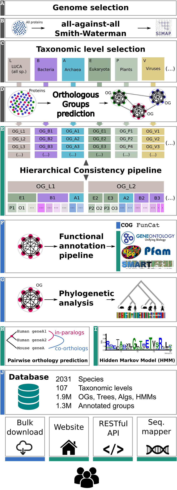
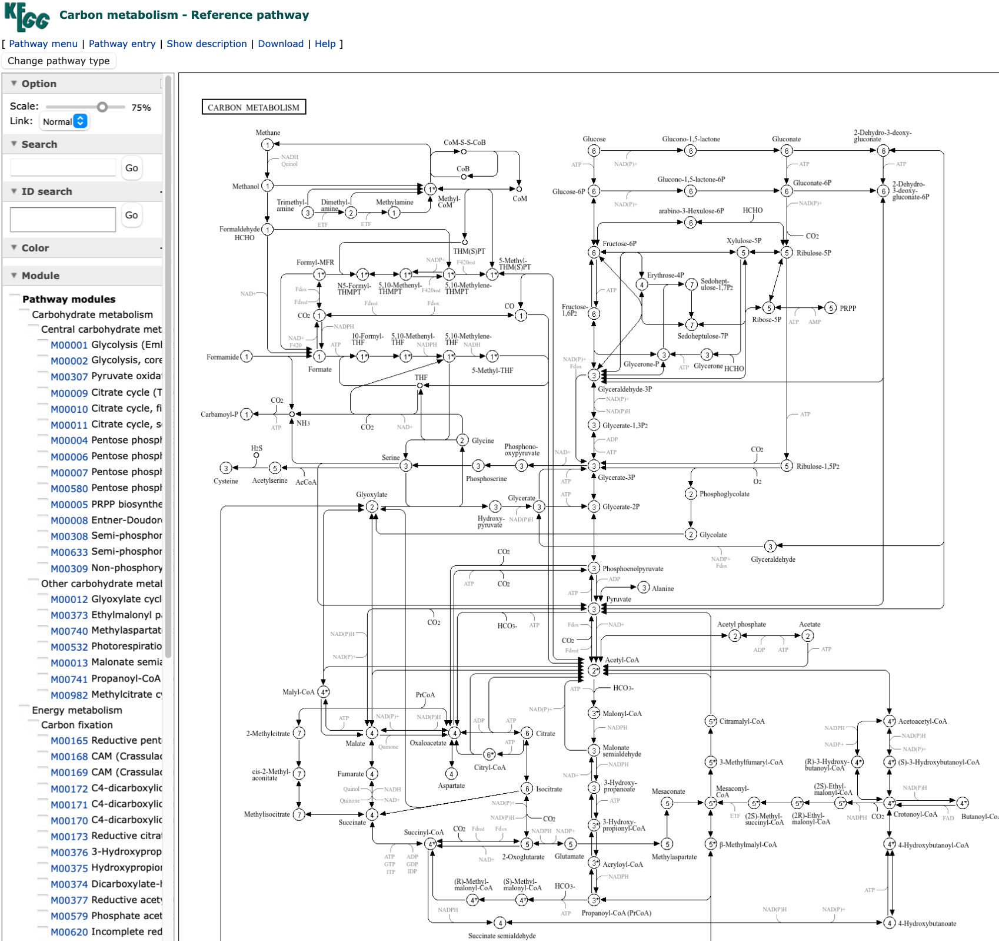
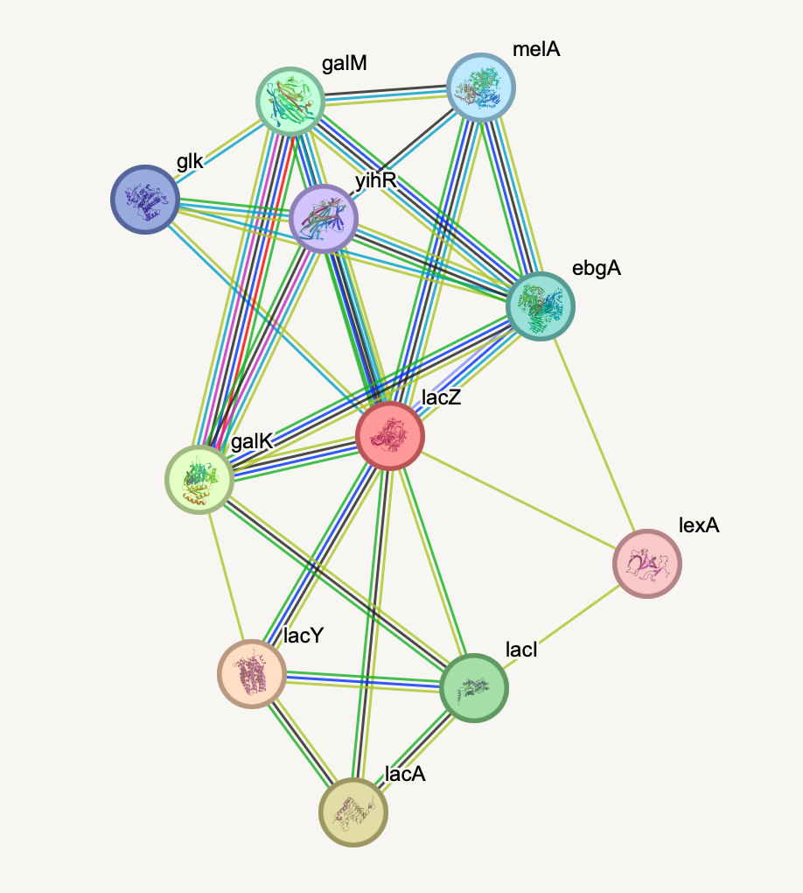
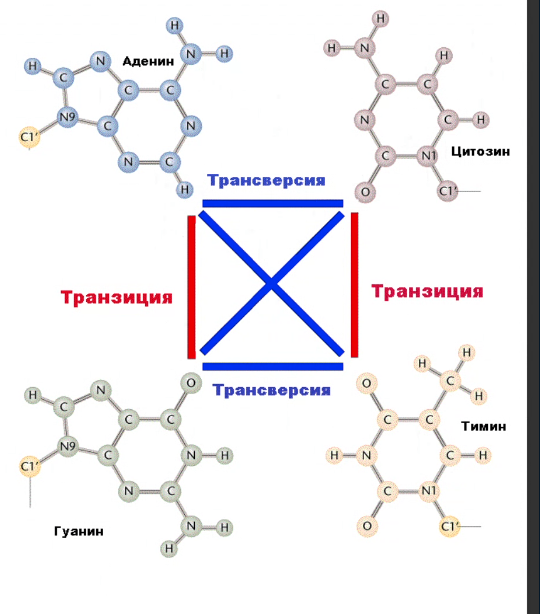
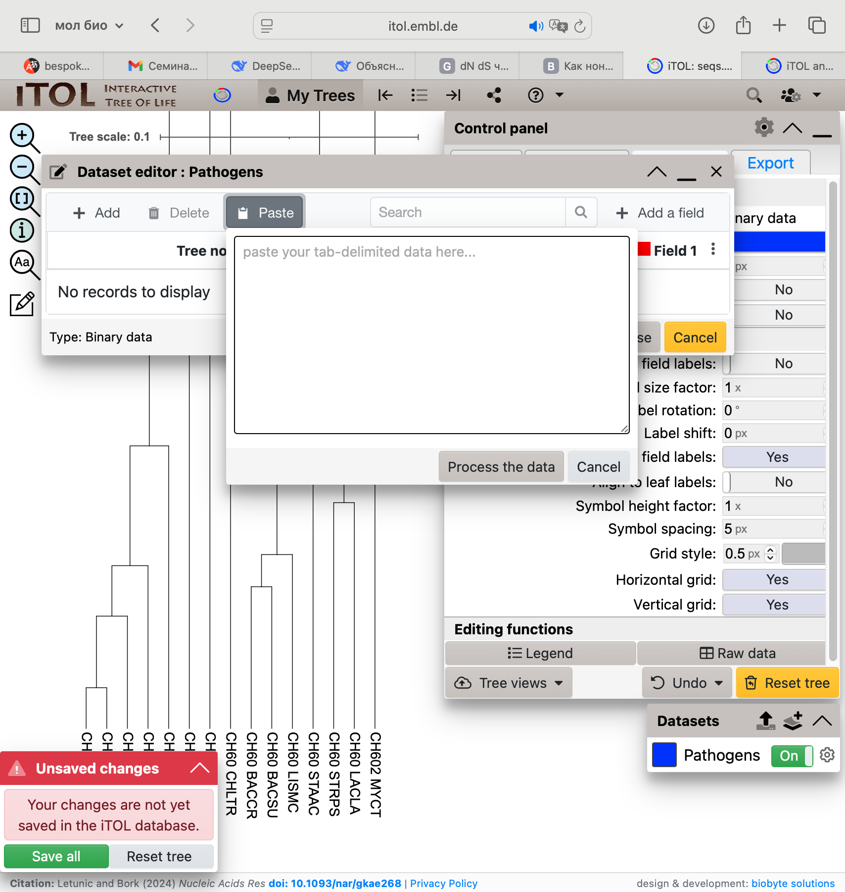
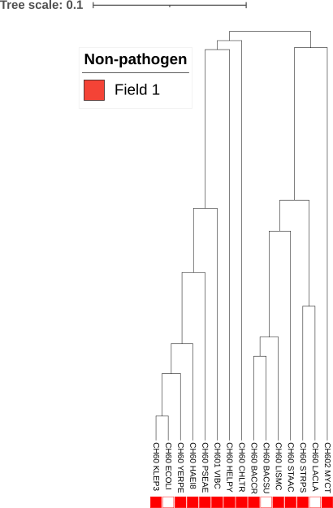
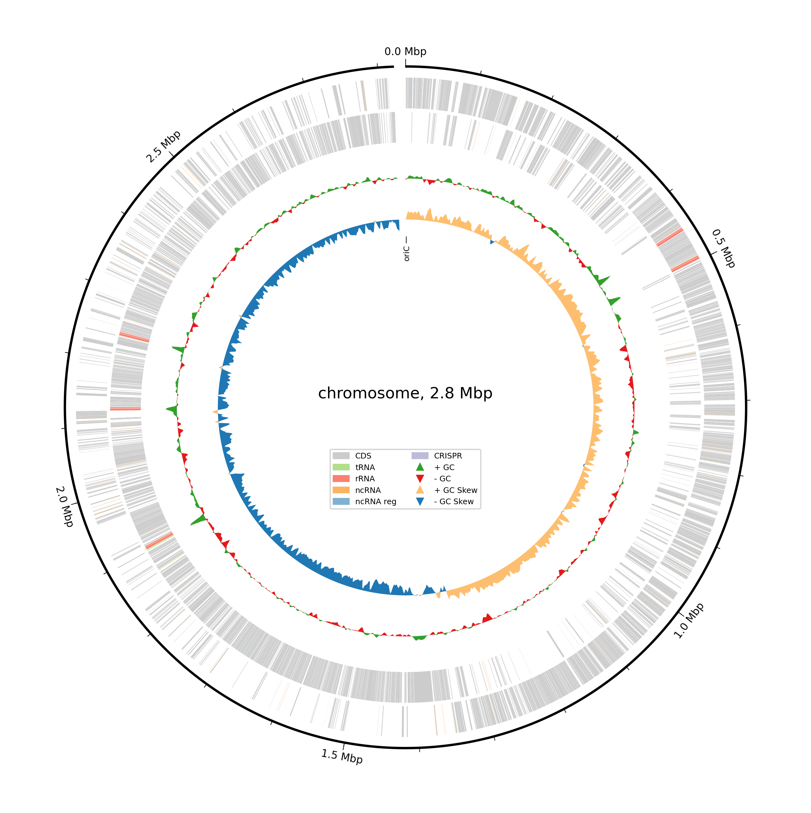
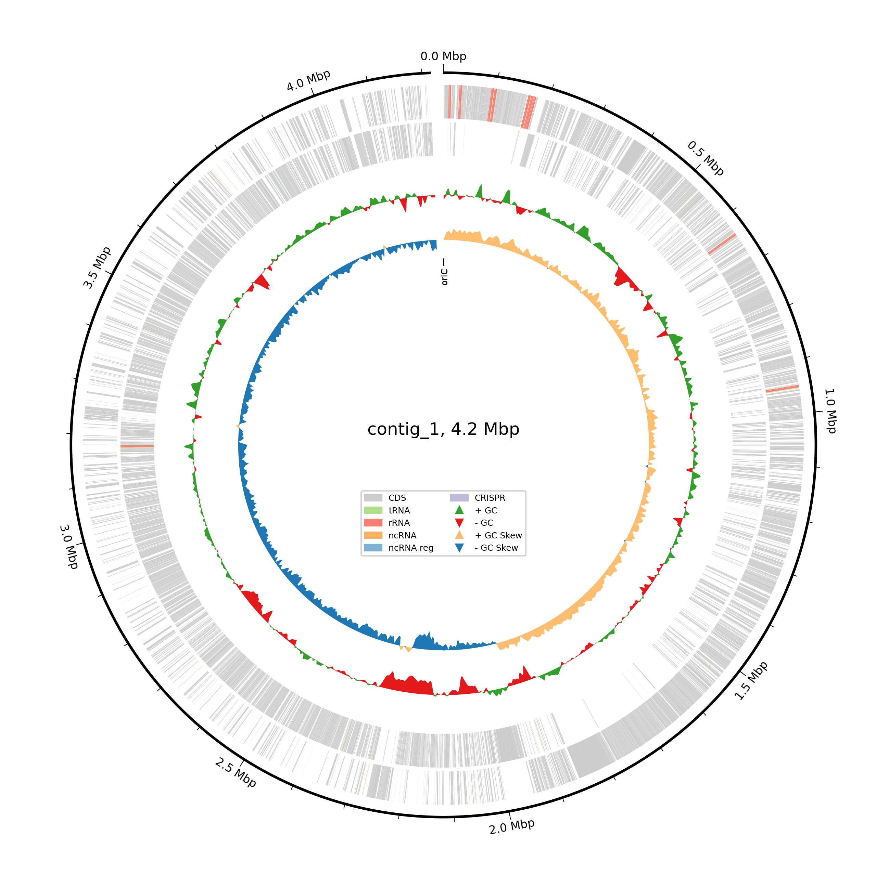

conda install emboss4 Биологические базы данных
5 Алгоритмы выравнивания
5.1 EMBOSS
Установка:
5.1.1 Needle (глобальное выравнивание)
Алгоритм Нидлмана — Вунша (Needleman-Wunsch) для глобального выравнивания двух последовательностей.
Параметры:
-
-gapopen— штраф за открытие гэпа -
-gapextend— штраф за продолжение гэпа (на каждый нуклеотид или остаток)
needle Структуры_данных/01.10.25/seq1.fasta \
Структуры_данных/01.10.25/seq2.fasta \
-gapopen 10 \
-gapextend 0.5 \
-outfile Структуры_данных/01.10.25/nw_result.txt⚠️ Ошибка:
dyld[83106]: Library not loaded: /usr/local/lib/libpq.5.dylib
5.1.2 Water (локальное выравнивание)
Алгоритм Смита — Уотермана (Smith-Waterman) для локального выравнивания.
water Структуры_данных/01.10.25/seq1.fasta \
Структуры_данных/01.10.25/seq2.fasta \
-gapopen 10 \
-gapextend 0.5 \
-outfile Структуры_данных/01.10.25/sw_result.txt⚠️ Та же ошибка:
dyld[83106]: Library not loaded: /usr/local/lib/libpq.5.dylib
5.2 MUSCLE
MUSCLE (MUltiple Sequence Comparison by Log-Expectation) — программа для множественного выравнивания белковых и нуклеотидных последовательностей.
Установка:
conda install -c bioconda muscleЗапуск множественного выравнивания:
IN="Структуры_данных/01.10.25/cycs_set.fasta"
BASE="Структуры_данных/01.10.25/cycs_muscle"
muscle -align "$IN" \
-output "${BASE}.aln.fasta" \
-threads 4 \
-maxiters 32 \
-log "${BASE}.log"
echo "Готово: ${BASE}.aln.fasta"Результат выравнивания:
echo 'cycs_muscle.aln.fasta'
cat Структуры_данных/01.10.25/cycs_muscle.aln.fastacycs_muscle.aln.fasta
>sp|P00044|CYC1_YEAST Cytochrome c isoform 1 OS=Saccharomyces cerevisiae (strain ATCC 204508 / S288c) OX=559292 GN=CYC1 PE=1 SV=2
MTEFKAGSAKKGATLFKTRCLQCHTVEKGGPHKVGPNLHGIFGRHSGQAEGYSYTDANIKKNVLWDENNMSEYLTNPKKY
IPGTKMAFGGLKKEKDRNDLITYLKKAC-E
>sp|Q6IQM2|CYC_DANRE Cytochrome c OS=Danio rerio OX=7955 GN=cyc PE=3 SV=3
-----MGDVEKGKKVFVQKCAQCHTVENGGKHKVGPNLWGLFGRKTGQAEGFSYTDANKSKGIVWGEDTLMEYLENPKKY
IPGTKMIFAGIKKKGERADLIAYLKSAT-S
>sp|P67881|CYC_CHICK Cytochrome c OS=Gallus gallus OX=9031 GN=CYC PE=1 SV=2
-----MGDIEKGKKIFVQKCSQCHTVEKGGKHKTGPNLHGLFGRKTGQAEGFSYTDANKNKGITWGEDTLMEYLENPKKY
IPGTKMIFAGIKKKSERVDLIAYLKDATSK
>sp|P99999|CYC_HUMAN Cytochrome c OS=Homo sapiens OX=9606 GN=CYCS PE=1 SV=2
-----MGDVEKGKKIFIMKCSQCHTVEKGGKHKTGPNLHGLFGRKTGQAPGYSYTAANKNKGIIWGEDTLMEYLENPKKY
IPGTKMIFVGIKKKEERADLIAYLKKATNE
>tr|A0A663D840|A0A663D840_PANTR Cytochrome c OS=Pan troglodytes OX=9598 GN=CK820_G0034669 PE=3 SV=1
-----MGDVEKGKKIFIMKCSQCHTVEKGGKHKTGPNLHGLFGRKTGQAPGYSYTAANKNKGIIWGEDTLMEYLENPKKY
IPGTKMIFVGIKKKEERADLIAYLKKATNE
>sp|P62897|CYC_MOUSE Cytochrome c, somatic OS=Mus musculus OX=10090 GN=Cycs PE=1 SV=2
-----MGDVEKGKKIFVQKCAQCHTVEKGGKHKTGPNLHGLFGRKTGQAAGFSYTDANKNKGITWGEDTLMEYLENPKKY
IPGTKMIFAGIKKKGERADLIAYLKKATNEЛог выполнения:
echo 'cycs_muscle.log'
cat Структуры_данных/01.10.25/cycs_muscle.logcycs_muscle.log
muscle 5.3.osx64 [] built Jul 30 2025 21:35:18
Started Sun Dec 28 22:37:19 2025
muscle -align Структуры_данных/01.10.25/cycs_set.fasta -output Структуры_данных/01.10.25/cycs_muscle.aln.fasta -threads 4 -maxiters 32 -log Структуры_данных/01.10.25/cycs_muscle.log
Input: 6 seqs, avg length 106, max 109, min 104
Random number seed 1
00:00 2.4Mb 100.0% Derep 5 uniques, 1 dupes
00:00 4.6Mb 100.0% Calc posteriors
00:00 4.6Mb 100.0% UPGMA5
00:00 4.7Mb 100.0% Consistency (1/2)
00:00 4.7Mb 100.0% Consistency (2/2)
00:00 4.8Mb 100.0% Refining
WARNING: Option -maxiters not used
Finished Sun Dec 28 22:37:19 2025
Elapsed time 00:00
Max memory 4.8Mb6 Алгоритмы поиска
6.1 BLAST
6.1.1 Установка BLAST и Entrez Direct
conda install -c conda-forge -c bioconda blast
conda install -c bioconda entrez-direct6.1.2 Скачивание референсного генома E. coli
efetch -db nuccore -id NC_000913.3 -format fasta \
> Структуры_данных/15.10.25/Ecoli_K12_MG1655_NC_000913_3.fna6.1.3 Индексирование референса
makeblastdb -in Структуры_данных/15.10.25/Ecoli_K12_MG1655_NC_000913_3.fna \
-dbtype nucl \
-parse_seqids \
-title "ecoli" \
-out Структуры_данных/15.10.25/ecoli_k12_nc000913
Building a new DB, current time: 05/14/2026 16:31:53
New DB name: /Users/lidaflorenskaya/Documents/АлгБио/1_sem/1_sem_algbio_book/Структуры_данных/15.10.25/ecoli_k12_nc000913
New DB title: ecoli
Sequence type: Nucleotide
Deleted existing Nucleotide BLAST database named /Users/lidaflorenskaya/Documents/АлгБио/1_sem/1_sem_algbio_book/Структуры_данных/15.10.25/ecoli_k12_nc000913
Keep MBits: T
Maximum file size: 3000000000B
Adding sequences from FASTA; added 1 sequences in 1.04363 seconds.
Critical: (310.5) External MBEDTLS version mismatch: 3.6.5 headers vs. 3.6.6 runtime6.1.4 Запуск поиска BLAST
blastn -query 'Структуры_данных/15.10.25/gene (1).fasta' \
-db Структуры_данных/15.10.25/ecoli_k12_nc000913 \
-out Структуры_данных/15.10.25/gene_vs_ecoli.tsv \
-outfmt "6 qseqid sseqid pident length mismatch gapopen qstart qend sstart send evalue bitscore" \
-evalue 1e-10 \
-max_target_seqs 10 \
-num_threads 1Critical: (310.5) External MBEDTLS version mismatch: 3.6.5 headers vs. 3.6.6 runtime6.1.4.1 Результат
cat Структуры_данных/15.10.25/gene_vs_ecoli.tsvV00296.1 ref|NC_000913.3| 99.935 3078 2 0 1 3078 366302 363225 0.0 56746.2 SRA (Sequence Read Archive)
6.2.1 Полезные ссылки
6.2.2 Установка SRA Toolkit
Вариант 1: через curl (скачивание архива)
curl --output sratoolkit.tar.gz https://ftp-trace.ncbi.nlm.nih.gov/sra/sdk/current/sratoolkit.current-mac64.tar.gz
tar -vxzf sratoolkit.tar.gzВариант 2: через conda
conda install sra-tools6.2.3 Скачивание SRA-данных по списку ID
# Путь к файлу со списком SRA-идентификаторов
LIST_FILE="Структуры_данных/15.10.25/SRR_Acc_List.txt"
# Папки для хранения .sra-файлов и итоговых FASTQ
SRA_DIR="Структуры_данных/15.10.25/sra_downloads"
FASTQ_DIR="Структуры_данных/15.10.25/fastq_files"
mkdir -p "${SRA_DIR}" "${FASTQ_DIR}"
while read SRR_ID; do
echo "$SRR_ID"
prefetch "${SRR_ID}" -O "${SRA_DIR}"
fasterq-dump "${SRR_ID}" --outdir "${FASTQ_DIR}" --split-files --skip-technical --threads 1
done < "${LIST_FILE}"⚠️ Проблема:
Скрипт не работает. Требуется диагностика.
7 Белковые базы данных и HMM-модели
7.1 Основные ресурсы
| Ресурс | Назначение | Ссылка |
|---|---|---|
| UniProt | Ключевая база данных белковых последовательностей и аннотаций | uniprot.org |
| HMMER | Инструменты для поиска гомологов с использованием скрытых марковских моделей | ebi.ac.uk/Tools/hmmer |
Примеры для тестирования UniProtKB: Q9Y5N5, Q5TIJ2
7.2 Принцип работы HMMER
Скрытые марковские модели (HMM) позволяют описывать семейства белков на основе их выравниваний и затем искать новые гомологи в базах данных.
7.3 Построение HMM-модели
7.3.1 Шаг 1. Множественное выравнивание (обучение модели)
Для построения модели сначала создаём множественное выравнивание на обучающей выборке (train.fasta). Используем выравниватель muscle:
TRAIN='Структуры_данных/29.10.25/sem4/train.fasta'
muscle -align "$TRAIN" -output Структуры_данных/29.10.25/demo_aln.fastaРезультат — выравнивание:
cat Структуры_данных/29.10.25/demo_aln.fasta>UniRef100_A0A212D384 C1QC n=1 Tax=Cervus elaphus hippelaphus TaxID=46360 RepID=A0A212D384_CEREH
MESAPGPPGWVHSDTAYACLGEGKPVRGPLRDQTGHLPPIQVDMGSGAWRLLVLNLLLLLLARPLRGQAGTHCYGIPGMP
GLPGAPGKDGYDGLPGPKGEPEGKPVRGPLRDQTGHLPPIQVDMGSGAWRLLVLNLLLLLLARPLRGQAGTHCYGIPGMP
GLPGAPGKDGYDGLPGPKGEPGIPATPGTRGPKGQKGDPGTPGYPGKNGPMGTPGIPGTPGTMGPPGEPGVEGRYKQKHQ
SVFSVTRQTVQFPAANSLVKFNEIITNPQGHYDRDTGKFTCKVPGLYYFVFHTSHTSNLCVLLFRSGFKVATFCDHMTSS
KQVSSGGVLLRMQEGQQVWLAVNDYNGMVGTGGSDSVFSGFLLFPD
>tr|F7HEL0|F7HEL0_MACMU Complement C1q C chain OS=Macaca mulatta OX=9544 GN=C1QC PE=2 SV=1
M-------------------------------------------------------------------------------
------------------------------------------DVGPSSLPHLGLKLLLLLLLLPLRGQANTGCYGIPGMP
GLPGAPGKDGHDGLPGPKGEPGIPAIPGTRGPKGQKGEPGTPGHPGKNGPMGPPGMPGVPGPMGIPGEPGEEGRYKQKYQ
SVFTVARQTHQPPAPNSLIRFNAVLTNPQGDYDTSTGKFTCKVPGLYYFVYHASHTANLCVLLYRGGVKVVTFCGHTSQA
NQVNSGGVLLRLQVGEEVWLGVNDYYDMVGIQGSDSVFSGFLLFPD
>tr|A0A2K5WNV2|A0A2K5WNV2_MACFA C1q domain-containing protein OS=Macaca fascicularis OX=9541 GN=EGM_00326 PE=4 SV=1
M-------------------------------------------------------------------------------
------------------------------------------DVGPSSLPHLGLKLLLLLLLLPLRGQANTGCYGIPGMP
GLPGAPGKDGHDGLPGPKGEPGIPAIPGTRGPKGQKGEPGTPGHPGKNGPMGPPGMPGVPGPMGIPGEPGEEGRYKQKYQ
SVFTVARQTHQPPAPNSLIRFNAVLTNPQGDYDTSTGKFTCKVPGLYYFVYHASHTANLCVLLYRGGVKVVTFCGHTSQA
NQVNSGGVLLRLQVGEEVWLGVNDYYDMVGIQGSDSVFSGFLLFPD
>tr|A0A2J8K450|A0A2J8K450_PANTR Adiponectin B OS=Pan troglodytes OX=9598 GN=ADIB PE=4 SV=1
M-------------------------------------------------------------------------------
------------------------------------------DMGPSSLPHLGLKLLLLLLLLPLRGQANTGCYGIPGMP
GLPGAPGKDGYDGLPGPKGEPGIPAIPGIRGPKGQKGEPGLPGHPGKNGPMGPPGMPGVPGPMGIPGEPGEEGRYKQKFQ
SVFTVARQTHQPPAPNSLIRFNAVLTNPQGDYDTSTGKFTCKVPGLYYFVYHASHTANLCVLLYRSGVKVVTFCGHTSKT
NQVNSGGVLLRLQVGEEVWLAVNDYYEMVGIQGSDSVFSGFLLFPD
>tr|A0A024RAA7|A0A024RAA7_HUMAN Adiponectin B OS=Homo sapiens OX=9606 GN=ADIB PE=4 SV=1
M-------------------------------------------------------------------------------
------------------------------------------DVGPSSLPHLGLKLLLLLLLLPLRGQANTGCYGIPGMP
GLPGAPGKDGYDGLPGPKGEPGIPAIPGIRGPKGQKGEPGLPGHPGKNGPMGPPGMPGVPGPMGIPGEPGEEGRYKQKFQ
SVFTVTRQTHQPPAPNSLIRFNAVLTNPQGDYDTSTGKFTCKVPGLYYFVYHASHTANLCVLLYRSGVKVVTFCGHTSKT
NQVNSGGVLLRLQVGEEVWLAVNDYYDMVGIQGSDSVFSGFLLFPD7.3.2 Шаг 2. Сборка HMM-модели
Инструмент hmmbuild превращает выравнивание в профиль HMM:
hmmbuild -n DEMO_PROFILE \
Структуры_данных/29.10.25/demo_profile.hmm \
Структуры_данных/29.10.25/demo_aln.fastaПосмотрим на полученную модель (первые 20 строк):
head -20 Структуры_данных/29.10.25/demo_profile.hmmHMMER3/f [3.4 | Aug 2023]
NAME DEMO_PROFILE
LENG 245
ALPH amino
RF no
MM no
CONS yes
CS no
MAP yes
DATE Sun Dec 28 22:37:44 2025
NSEQ 5
EFFN 0.405273
CKSUM 3271082919
STATS LOCAL MSV -11.0624 0.70319
STATS LOCAL VITERBI -11.7943 0.70319
STATS LOCAL FORWARD -5.5339 0.70319
HMM A C D E F G H I K L M N P Q R S T V W Y
m->m m->i m->d i->m i->i d->m d->d
COMPO 2.60034 4.11646 3.02860 2.91582 3.29415 2.32280 3.78234 2.94540 2.80972 2.43041 3.68580 3.15881 2.84392 3.18382 3.08263 2.69099 2.87652 2.64704 4.82526 3.43607
2.68618 4.42225 2.77519 2.73123 3.46354 2.40513 3.72494 3.29354 2.67741 2.69355 4.24690 2.90347 2.73739 3.18146 2.89801 2.37887 2.77519 2.98518 4.58477 3.615037.4 Сканирование модели против базы последовательностей
Теперь используем построенную модель, чтобы найти её гомологов в тестовой выборке (test.fasta). Инструмент — hmmsearch.
DB='Структуры_данных/29.10.25/sem4/test.fasta'
hmmsearch --cpu 1 \
--tblout Структуры_данных/29.10.25/hmmsearch_tblout.tsv \
--domtblout Структуры_данных/29.10.25/hmmsearch_domtblout.tsv \
Структуры_данных/29.10.25/demo_profile.hmm "$DB" \
> Структуры_данных/29.10.25/hmmsearch_output.txt7.4.1 Результаты поиска
Таблица попаданий (tblout) — сводка по каждой найденной последовательности:
cat Структуры_данных/29.10.25/hmmsearch_tblout.tsvТаблица доменов (domtblout) — детальные координаты доменов внутри последовательностей:
cat Структуры_данных/29.10.25/hmmsearch_domtblout.tsvПолный вывод (output.txt) — расширенный отчёт с выравниваниями и оценками:
cat Структуры_данных/29.10.25/hmmsearch_output.txt7.5 Поиск последовательности против базы HMM-моделей (Pfam)
Pfam — крупнейшая коллекция белковых семейств и доменов. Вместо того чтобы искать одной моделью по базе последовательностей, можно проверить последовательность против всех моделей Pfam.
7.5.1 Шаг 1. Скачивание и подготовка базы Pfam
# Скачиваем файл с моделями (внимание: большой размер!)
wget -P 29.10.25 ftp://ftp.ebi.ac.uk/pub/databases/Pfam/current_release/Pfam-A.hmm.gz
# Распаковываем
gunzip Структуры_данных/29.10.25/Pfam-A.hmm.gz
# Индексируем для быстрого поиска
hmmpress Структуры_данных/29.10.25/Pfam-A.hmm[!NOTE] Файл Pfam-A.hmm имеет большой объём и может занимать значительное дисковое пространство.
7.5.2 Шаг 2. Аннотация последовательности с помощью hmmscan
Инструмент hmmscan ищет, какие Pfam-модели соответствуют данной белковой последовательности.
hmmscan --cpu 1 \
--domtblout pfam.domtbl \
Структуры_данных/29.10.25/Pfam-A.hmm \
protein.fasta \
> Структуры_данных/29.10.25/pfam_scan.txt7.6 Краткое резюме
| Что делаем | Инструмент | Вход | Выход |
|---|---|---|---|
| Выравнивание последовательностей | muscle |
FASTA | Выравнивание |
| Построение HMM-модели | hmmbuild |
Выравнивание |
.hmm-файл модели |
| Поиск моделью по базе | hmmsearch |
Модель + база последовательностей | Таблицы попаданий |
| Поиск последовательности по базе моделей | hmmscan |
Последовательность + база моделей | Список доменов |
8 БД трехмерных структур (теория)
8.1 Парадигма биоинформатики
В основе современной биоинформатики лежит принцип: сходство последовательностей = сходство функций = эволюционное родство. Однако ключевую роль в выполнении биологических функций играет не линейная последовательность, а пространственная структура молекул.
8.2 Уровни организации биополимеров
- Первичная структура — линейная последовательность мономеров (аминокислот или нуклеотидов).
-
Вторичная структура — локальное упорядоченное расположение полимерной цепи.
- У ДНК она минимальна.
- У РНК разнообразна: шпильки, псевдоузлы и др.
- У белков включает: α-спирали, β-листы и петли (часто содержат пролин).
- У ДНК она минимальна.
- Третичная структура — глобальное трёхмерное расположение всей цепи. Это центральная тема лекции.
- Четвертичная структура — объединение нескольких полипептидных цепей (субъединиц) в функциональный комплекс.
8.3 Методы экспериментального определения 3D-структур
8.3.1 ЯМР (Ядерный магнитный резонанс)
- Основан на возбуждении ядер с ненулевым спином в сильном магнитном поле.
-
Применим к гибким белкам малого размера (до ~40 кДа).
- Требование: изотопная маркировка образцов ([13C, 15N]).
8.3.2 Рентгеноструктурный анализ (РСА, X-ray)
- Выращивание кристалла белка.
- Облучение кристалла рентгеновскими лучами.
- Регистрация дифракционной картины.
- Восстановление электронной плотности (обратное преобразование Фурье).
- Построение атомной модели и уточнение координат.
8.3.3 Криоэлектронная микроскопия (cryo-EM)
- Быстрое замораживание образца в витрифицированном льду (без кристаллизации).
- Съёмка множества 2D-изображений на электронном микроскопе.
- Сегментация и классификация частиц.
- 3D-реконструкция.
8.4 База данных PDB (Protein Data Bank)
PDB — главный архив пространственных структур биомолекул.
Файлы в формате .pdb содержат:
- метаинформацию (метод определения, авторы, литературу);
- координаты каждого атома в структуре.
8.5 Визуализация и анализ
8.5.1 PyMOL
Мощная программа для визуализации и манипуляции 3D-структурами белков, нуклеиновых кислот и их комплексов.
Примечание: требуется лицензия; существует бесплатный аналог — Avogadro2.
8.6 Предсказание структуры: AlphaFold
Нейросетевая модель от DeepMind для предсказания 3D-структуры белка по аминокислотной последовательности:
-
Вход — последовательность белка.
- Поиск гомологов и построение множественного выравнивания (MSA).
- Нейросеть предсказывает контакты и расстояния между остатками.
- Геометрический модуль собирает 3D-модель с атомными координатами.
- Выдача оценки достоверности для каждого остатка (plDDT).
8.7 Молекулярная динамика (МД)
Метод симуляции движения атомов во времени на основе законов классической механики.
Ключевые компоненты:
- Силовое поле
- Начальные условия (координаты, скорости)
- Граничные условия
- Шаг интегрирования
- Интегратор (алгоритм численного решения уравнений движения)
8.8 Докинг (молекулярный стыковочный расчёт)
Более быстрый, чем МД, вычислительный метод. Предсказывает оптимальную ориентацию и энергию связывания комплекса «макромолекула + лиганд».

8.9 Протеомика и масс-спектрометрия
Протеомика — изучение всего набора белков организма (протеома).
Классический масс-спектрометрический протокол:
- Ферментативное расщепление белков на пептиды.
- Получение масс-спектров.
- Сравнение с базой референсных белков.
- Идентификация исходного белкового состава.
9 БД трехмерных структур (практика)
9.1 Работа с PDB
Основной портал: https://www.rcsb.org/
9.1.1 Пример 1: 1GFL (рентгеноструктурный анализ)
Скачаем файл .pdb и посмотрим его начало и конец:
head -40 Структуры_данных/12.11.25/1GFL.pdb
tail -40 Структуры_данных/12.11.25/1GFL.pdb9.1.2 Пример 2: 1DMO (ЯМР)
Для NMR-структур возможна визуализация конформационной подвижности (опция “Model Structure”).
head -40 Структуры_данных/12.11.25/1DMO.pdb
tail -40 Структуры_данных/12.11.25/1DMO.pdb9.2 Визуализация: PyMOL и Avogadro2
PyMOL — стандарт де-факто, но он платный.
Альтернатива: бесплатный Avogadro2 (скачать).
На некоторых версиях macOS возникает ошибка:You can’t open the application “Avogadro2” because this application is not supported on this Mac.
9.3 Сервер предсказания структур
Альтернатива локальному AlphaFold — AlphaFold Server.
10 Функциональные базы данных (теория)
10.1 Общая схема функциональной аннотации
Любой подход к функциональной аннотации строится по единому принципу:
- Вход — последовательность (нуклеотидная или белковая)
- Поиск признаков — идентификация значимых участков
- Гомология — поиск известных родственных последовательностей
- Функциональная классификация — отнесение к семействам и категориям
- Структурная аннотация — предсказание доменов и мотивов
- Результат — описание функций гена/белка
10.2 Поиск открытых рамок считывания
GeneMark — один из основных инструментов для предсказания ОРФ (открытых рамок считывания) в бактериальных и эукариотических геномах.
10.3 Выравнивание как основа аннотации
10.3.1 BLAST
-
Порог E-value:
< 10⁻⁵ -
Порог идентичности (pident):
≥ 70% - Важно: рекомендуется визуально проверять выравнивание, а не полагаться только на числа.
10.3.2 MUMmer
Альтернативный инструмент для выравнивания, особенно эффективен при сравнении больших или высокосходных последовательностей (в том числе целых геномов).
10.4 Базы данных генов и их продуктов
| База данных | Назначение |
|---|---|
| COG | Кластеры ортологичных групп (эволюционное родство) |
| EggNOO | Функциональная аннотация через эволюционные группы (расширенная версия COG) |
| OrthoDB | Ортологические группы с функциональными аннотациями |
| GO | Gene Ontology — унифицированная терминология для описания функций |
| DeepGO | Аннотация GO-терминами с использованием нейросетей |
| KEGG | База метаболических путей и взаимодействий |
| Reactome | Реакции и сигнальные пути человека и модельных организмов |
11 Функциональные базы данных (практика)
11.1 EggNOG v5.0

11.1.1 Онлайн-версия
- Зайдите в раздел Sequence search (меню слева)
- Загрузите одну белковую последовательность из этого файла
- Перейдите в любой результат поиска — система покажет, например, 15 белков из 14 видов.

11.1.2 Запуск из командной строки (eggnog-mapper)
# Активация окружения
conda activate py3_study
# Установка eggnog-mapper
conda install -c conda-forge -c bioconda eggnog-mapper
# Создание директории для базы данных
mkdir eggnog_data
# Скачивание базы данных (если автоматически не работает)
# Альтернатива: вручную скачать базу с http://eggnog5.embl.de/download/emapperdb-5.0.2/
# Запуск аннотации
emapper.py -i 26.11.25/protein.fasta \
-o emapper \
--cpu 1 \
--data_dir ./eggnog_data11.2 KEGG
KEGG — Kyoto Encyclopedia of Genes and Genomes
Любой метаболический путь представлен в виде сети, где в вершинах находятся компаунды — низкомолекулярные вещества, участвующие в реакциях.

Способы работы с KEGG: - Онлайн-интерфейс - R-пакет KEGGREST (программный доступ)
11.3 Gene Ontology
GO предоставляет три независимые ветви описания генов/белков: - Молекулярная функция (что делает белок) - Биологический процесс (в каком процессе участвует) - Клеточный компонент (где находится)
11.4 DeepGO
DeepGO — нейросетевая аннотация GO-терминами
Формат работы: онлайн-сервис.
По белковой последовательности нейросеть предсказывает GO-идентификаторы, описывающие её функцию.
11.5 STRING
STRING — база данных белок-белковых взаимодействий
Пример запроса: Search → Protein by name → lacZ → Continue
Результат — сеть взаимодействий для выбранного белка (функциональные партнёры, предсказанные и экспериментальные связи).

12 Филогенетические деревья (теория)
12.1 Типы деревьев
Укорененные/неукорененные (надо проверять, какое именно дерево строит программа - бывает, что она произвольно вставляет корень); ультраметрические/аддитивные
12.2 Базовые понятия
- Листья
- Внутренние узлы (это зачастую гипотетические предки)
- Корень (гипотетические прародитель всех)
- Ветви
- Клады (группы листьев, объединенные внутренним узлом)
12.3 Источники данных для построения деревьев
- Множественное выравнивание
- Матрица расстояний
- Дерево
12.3.1 Множественное выравнивание
- Последовательности должны быть родственными, ортологи
- Очистка (бывают вставки, которые стоит удалить)
12.3.2 Эволюционнные модели: ДНК
- Jukes-Cantor
- Все замены равновероятны
- Частоты нуклеотидов - тоже равные
- Испоользуется для коротких эволюционных расстояний (например подходит для вирусов)
- Kimura
- Различает транзиции и трансверсии
- Транзиции происходят чаще

- Hasegava-Kishino-Yano
- Для ML - филогенетики
- Как Кимура + учитываются неравные частоты нуклеотидов
- General Time Reversible
12.3.3 Эволюционнные модели: Белок
- PAM
- BLOSUM
- LG (стандарт в IQ-TREE, PhyLM, RAxML)
- Строится на огромном наборе белковых MSA
12.3.4 Матрица расстояний
Каждый элемент - эволюционная дистанция между двумя объектами
- Неотрицательность
- Симметричность
- \(d_{ii}\) = 0
12.3.4.1 Методы подсчета
- p-distance (proportion distance) \(d_{ij} = \frac{число~ различий}{общая~ длина ~сравнения}\)
- ML - посчитать t, при котором вероятность реализованного исхода наибольшая …
12.3.5 Построение дерева
12.3.5.1 Neighbor-Joining (NJ)
Метод ближайшего соседа
В начальной точке все последовательности равноудалены, алгоритм начинает с пары с минимальным расстоянием, к ней присоединяется следующая по минимальному расстоянию, строится неукорененное дерево (ведь мы начинаем с листьев)
Не требует равных скоростей эволюции
Топология дерево сильно зависит от того, откуда мы начнем его строить
12.3.5.2 Maximum Parsimony
Наиболее вероятным считается дерево, требующее минимального числа эволюционных изменений
L(T) - длина дерева T = argmin(L(T))
Есть несколько алгоритмов подсчета длин деревьев, без полного перебора
Предполагает одинаковую скорость эволюции
Строит неукорененное дерево
12.3.5.3 UPGMA (Unweight Pair Group Method with Arithmetic Mean)
Одинаковая скорость эволюции + есть корень -> строит укорененное, ультраметрическое дерево
12.3.5.4 Maximum Likelyhood
\(T^*,~ \theta^* = arg~ max L(T,\theta~|MSA )\)
Начальноу дерево -> Оценить длину дерева -> Есть улучшения? -> и тд
12.3.5.5 Сравнение всех методов

12.4 Форматы дереьев
- Newick (bootstrap - проверка дерева на устойчивость - если убрать лист - изменится ли топология клады) ((A:0.1,B:0.2)90:0.3,C:0.4)
- Nexus Begin tree; Tree T1 = ((A,B),C); End;
Основан на блоках кода - XML - based (PHYLOXML) - JSON-based (Nextstrain)
12.5 Визуализация
- iTOL
- Dendroscope
- Auspice (для эпидемиологического анализа)
- MEGA (хороша для обучения)
- UGEN
13 Филогенетические деревья (практика)
13.1 Устанваливаем пакеты bmge, iqtree, emboss, phylip
conda activate py3_study
conda install -c bioconda bmge -y
conda install -c bioconda -c conda-forge iqtree emboss phylip -y13.2 Строим множественное выравнивание
muscle -align Структуры_данных/03.12.25/seqs.fasta -output Структуры_данных/03.12.25/seqs.aln.fastaСмотрим в UGENE и видим, что качество не очень высокое

13.3 Чистим выравнивание от “плохих” позиций
BMGE -i Структуры_данных/03.12.25/seqs.aln.fasta -t AA -m BLOSUM30 -h 0.5 -of Структуры_данных/03.12.25/seqs.aln.trimmed.fastaИ снова посмотрим в UGENE

Программа аккуратно вырезала неудачные участки выравнивания
13.4 Подсчет расстояний для NJ и UPGMA
13.4.1 FASTA -> PHYLIP + переименовываем
seqret -sequence Структуры_данных/03.12.25/seqs.aln.trimmed.fasta -outseq Структуры_данных/03.12.25/seqs.phy -osformat2 phyliphead Структуры_данных/03.12.25/seqs.phy 15 528
CH60_HELPYAKEIKFSDSA RNLLFEGVRQ LHDAVKVTMG PRGRNVLIQK SYGAPSITKD
CH602_MYCTAKTIAYDEEA RRGLERGLNA LADAVKVTLG PKGRNVVLEK KWGAPTITND
CH60_BACCRAKDIKFSEEA RRSMLRGVDT LANAVKVTLG PKGRNVVLEK KFGSPLITND
CH60_STAACVKQLKFSEDA RQAMLRGVDQ LANAVKVTIG PKGRNVVLDK EFTAPLITND
CH60_STRPSSKEIKFSSDA RSAMVRGVDI LADTVKVTLG PKGRNVVLEK SFGSPLITND
CH60_LACLASKDIKFSSDA RTAMMRGIDI LADTVKTTLG PKGRNVVLEK SYGSPLITND
CH60_BACSUAKEIKFSEEA RRAMLRGVDA LADAVKVTLG PKGRNVVLEK KFGSPLITND
CH60_LISMCAKDIKFSEDA RRAMLRGVDQ LANAVKVTLG PKGRNVVLEK KFGSPLITND
CH60_CHLTRAKNIKYNEEA RKKIQKGVKT LAEAVKVTLG PKGRHVVIDK SFGSPQVTKDPHYLIP-программы по умолчанию читают файл “infile”
cp Структуры_данных/03.12.25/seqs.phy Структуры_данных/03.12.25/infile13.5 Запускаем protdist с настройками по умолчанию
cd Структуры_данных/03.12.25
protdist << EOF
Y
cd -13.6 Сохраняем матрицу расстояний в отдельный файл
mv Структуры_данных/03.12.25/outfile Структуры_данных/03.12.25/seqs.protdist13.7 NJ
Исходные данные для neighbor должны называться infile
cp Структуры_данных/03.12.25/seqs.protdist Структуры_данных/03.12.25/infilecd Структуры_данных/03.12.25
neighbor << EOF
Y
EOF
cd -mv Структуры_данных/03.12.25/outtree Структуры_данных/03.12.25/seqs.NJ.tree
mv Структуры_данных/03.12.25/outfile Структуры_данных/03.12.25/seqs.NJ.logДерево в Newick-формате:
head Структуры_данных/03.12.25/seqs.NJ.tree(((CH602_MYCT:0.28475,((((CH60_BACCR:0.04841,CH60_BACSU:0.06128):0.01101,
CH60_LISMC:0.06874):0.03094,CH60_STAAC:0.17307):0.02608,
(CH60_STRPS:0.07431,CH60_LACLA:0.10047):0.07966):0.08306):0.04067,
CH60_CHLTR:0.27342):0.00408,(CH60_PSEAE:0.10272,(CH601_VIBC:0.19322,
(CH60_HAEI8:0.06501,(CH60_YERPE:0.04739,(CH60_KLEP3:0.01787,
CH60_ECOLI:0.01368):0.02377):0.01907):0.03829):0.02055):0.10595,CH60_HELPY:0.27015);Файл с простой визуализацией
head -50 Структуры_данных/03.12.25/seqs.NJ.log
15 Populations
Neighbor-Joining/UPGMA method version 3.697
Neighbor-joining method
Negative branch lengths allowed
+----------------CH602_MYCT
!
! +--CH60_BACCR
! +-2
+--6 +-3 +--CH60_BACSU
! ! ! !
! ! +-4 +---CH60_LISMC
! ! ! !
! +----5 +----------CH60_STAAC
+-7 !
! ! ! +----CH60_STRPS
! ! +---1
! ! +-----CH60_LACLA
! !
! +----------------CH60_CHLTR
!
! +------CH60_PSEAE
8-----9
! ! +----------CH601_VIBC
! +-10
! ! +---CH60_HAEI8
! +-12
! ! +--CH60_YERPE
! +-13
! ! +-CH60_KLEP3
! +-11
! +CH60_ECOLI
!
+---------------CH60_HELPY
remember: this is an unrooted tree!
Between And Length
------- --- ------
8 7 0.00408
7 6 0.04067
6 CH602_MYCT 0.28475
6 5 0.08306remember: this is an unrooted tree!
13.8 UPGMA
cd Структуры_данных/03.12.25
neighbor << EOF
N
Y
EOF
cd -mv Структуры_данных/03.12.25/outtree Структуры_данных/03.12.25/seqs.UPGMA.tree
mv Структуры_данных/03.12.25/outfile Структуры_данных/03.12.25/seqs.UPGMA.loghead -50 Структуры_данных/03.12.25/seqs.UPGMA.log
15 Populations
Neighbor-Joining/UPGMA method version 3.697
UPGMA method
Negative branch lengths allowed
+--------------CH60_HELPY
!
! +---CH60_HAEI8
! +--4
+-11 ! ! +--CH60_YERPE
! ! ! +-2
! ! +-7 ! +CH60_KLEP3
! ! ! ! +-1
! ! ! ! +CH60_ECOLI
+-13 +-----9 !
! ! ! +------CH60_PSEAE
! ! !
! ! +--------CH601_VIBC
! !
-14 +---------------CH60_CHLTR
!
! +--------------CH602_MYCT
! !
! ! +--CH60_BACCR
! ! +-3
+-12 +---5 +--CH60_BACSU
! ! !
! +-8 +---CH60_LISMC
! ! !
+----10 +-------CH60_STAAC
!
! +----CH60_STRPS
+---6
+----CH60_LACLA
From To Length Height
---- -- ------ ------
14 13 0.00595 0.00595
13 11 0.00586 0.01181
11 CH60_HELPY 0.25482 0.26663
11 9 0.10358 0.11538
9 7 0.04185 0.15724
7 4 0.04638 0.20362Можем сравнить деревья в Sublime Text

head Структуры_данных/03.12.25/seqs.UPGMA.tree(((CH60_HELPY:0.25482,(((CH60_HAEI8:0.06301,(CH60_YERPE:0.04347,
(CH60_KLEP3:0.01578,CH60_ECOLI:0.01578):0.02770):0.01954):0.04638,
CH60_PSEAE:0.10939):0.04185,CH601_VIBC:0.15124):0.10358):0.00586,
CH60_CHLTR:0.26068):0.00595,(CH602_MYCT:0.25603,((((CH60_BACCR:0.05484,
CH60_BACSU:0.05484):0.01245,CH60_LISMC:0.06730):0.06915,
CH60_STAAC:0.13645):0.02019,(CH60_STRPS:0.08739,CH60_LACLA:0.08739):0.06925):0.09939):0.01060);13.9 ML
iqtree -s Структуры_данных/03.12.25/seqs.aln.trimmed.fasta --seqtype AA -m MFP -bb 1000 -nt AUTONEWICK
head Структуры_данных/03.12.25/seqs.aln.trimmed.fasta.treefile(CH60_HELPY:0.3898588752,(CH602_MYCTU:0.3912167735,(((CH60_BACCR:0.0803259504,CH60_BACSU:0.0493609255)68:0.0280073589,CH60_LISMC:0.0756762233)58:0.0341075748,(CH60_STAAC:0.2126168178,(CH60_STRPS:0.0734405241,CH60_LACLA:0.1349756976)100:0.1553805108)82:0.0348490400)100:0.1682327665)99:0.1208257866,(CH60_CHLTR:0.4156398474,(((CH60_HAEI8:0.0772703352,(CH60_YERPE:0.0525477043,(CH60_KLEP3:0.0269603591,CH60_ECOLI:0.0083411322)86:0.0344113677)83:0.0362044668)91:0.0439997970,CH601_VIBC3:0.2702593075)92:0.0538020845,CH60_PSEAE:0.1392840272)100:0.1665632925)41:0.0224134680);NEXUS
head -50 Структуры_данных/03.12.25/seqs.aln.trimmed.fasta.splits.nex#nexus
BEGIN Taxa;
DIMENSIONS ntax=15;
TAXLABELS
[1] 'CH60_HELPY'
[2] 'CH602_MYCTU'
[3] 'CH60_BACCR'
[4] 'CH60_STAAC'
[5] 'CH60_STRPS'
[6] 'CH60_LACLA'
[7] 'CH60_BACSU'
[8] 'CH60_LISMC'
[9] 'CH60_CHLTR'
[10] 'CH60_HAEI8'
[11] 'CH60_YERPE'
[12] 'CH60_PSEAE'
[13] 'CH60_KLEP3'
[14] 'CH60_ECOLI'
[15] 'CH601_VIBC3'
;
END; [Taxa]
BEGIN Splits;
DIMENSIONS ntax=15 nsplits=63;
FORMAT labels=no weights=yes confidences=no intervals=no;
MATRIX
100 2,
100 3,
100 7,
68 3 7,
100 8,
58 3 7 8,
100 4,
100 5,
100 6,
100 5 6,
82 4 5 6,
100 3 4 5 6 7 8,
99 2 3 4 5 6 7 8,
100 10,
100 11,
12 10 11,
100 13,
100 14,
86 13 14,
91 10 11 13 14,
100 15,
92 10 11 13 14 15,
100 12,Лучшее и консенсуснное дерево:
tail -150 Структуры_данных/03.12.25/seqs.aln.trimmed.fasta.iqtreeMTVER+G4 -8099.182 16254.365 - 5.42e-294 16257.619 - 7.71e-294 16373.900 - 3.39e-293
MTVER+I+G4 -8099.449 16256.898 - 1.53e-294 16260.392 - 1.93e-294 16380.701 - 1.13e-294
HIVW+G4 -8123.422 16302.844 - 1.61e-304 16306.099 - 2.29e-304 16422.379 - 1.01e-303
HIVW+I+G4 -8121.712 16301.425 - 3.27e-304 16304.919 - 4.13e-304 16425.228 - 2.43e-304
MTMAM+G4 -8194.676 16445.351 - 0 16448.606 - 0 16564.886 - 0
MTMAM+I+G4 -8195.056 16448.113 - 0 16451.607 - 0 16571.917 - 0
AIC, w-AIC : Akaike information criterion scores and weights.
AICc, w-AICc : Corrected AIC scores and weights.
BIC, w-BIC : Bayesian information criterion scores and weights.
Plus signs denote the 95% confidence sets.
Minus signs denote significant exclusion.
SUBSTITUTION PROCESS
--------------------
Model of substitution: LG+G4
State frequencies: (model)
Model of rate heterogeneity: Gamma with 4 categories
Gamma shape alpha: 0.7552
Category Relative_rate Proportion
1 0.0860 0.2500
2 0.3884 0.2500
3 0.9437 0.2500
4 2.5819 0.2500
Relative rates are computed as MEAN of the portion of the Gamma distribution falling in the category.
MAXIMUM LIKELIHOOD TREE
-----------------------
Log-likelihood of the tree: -7425.8244 (s.e. 223.0207)
Unconstrained log-likelihood (without tree): -2897.0082
Number of free parameters (#branches + #model parameters): 28
Akaike information criterion (AIC) score: 14907.6488
Corrected Akaike information criterion (AICc) score: 14910.9033
Bayesian information criterion (BIC) score: 15027.1835
Total tree length (sum of branch lengths): 3.2966
Sum of internal branch lengths: 0.8988 (27.2646% of tree length)
NOTE: Tree is UNROOTED although outgroup taxon 'CH60_HELPY' is drawn at root
Numbers in parentheses are ultrafast bootstrap support (%)
+-------------------------------------CH60_HELPY
|
| +-------------------------------------CH602_MYCTU
+----------| (99)
| | +------CH60_BACCR
| | +--| (68)
| | | +---CH60_BACSU
| | +--| (58)
| | | +------CH60_LISMC
| +---------------| (100)
| | +-------------------CH60_STAAC
| +--| (82)
| | +------CH60_STRPS
| +--------------| (100)
| +------------CH60_LACLA
|
| +---------------------------------------CH60_CHLTR
+--| (41)
| +------CH60_HAEI8
| +---| (91)
| | | +----CH60_YERPE
| | +--| (83)
| | | +--CH60_KLEP3
| | +--| (86)
| | +--CH60_ECOLI
| +----| (92)
| | +-------------------------CH601_VIBC3
+---------------| (100)
+------------CH60_PSEAE
Tree in newick format:
(CH60_HELPY:0.3898588752,(CH602_MYCTU:0.3912167735,(((CH60_BACCR:0.0803259504,CH60_BACSU:0.0493609255)68:0.0280073589,CH60_LISMC:0.0756762233)58:0.0341075748,(CH60_STAAC:0.2126168178,(CH60_STRPS:0.0734405241,CH60_LACLA:0.1349756976)100:0.1553805108)82:0.0348490400)100:0.1682327665)99:0.1208257866,(CH60_CHLTR:0.4156398474,(((CH60_HAEI8:0.0772703352,(CH60_YERPE:0.0525477043,(CH60_KLEP3:0.0269603591,CH60_ECOLI:0.0083411322)86:0.0344113677)83:0.0362044668)91:0.0439997970,CH601_VIBC3:0.2702593075)92:0.0538020845,CH60_PSEAE:0.1392840272)100:0.1665632925)41:0.0224134680);
CONSENSUS TREE
--------------
Consensus tree is constructed from 1000 bootstrap trees
Log-likelihood of consensus tree: -7425.824432
Robinson-Foulds distance between ML tree and consensus tree: 0
Branches with support >0.000000% are kept (extended consensus)
Branch lengths are optimized by maximum likelihood on original alignment
Numbers in parentheses are bootstrap supports (%)
+-------------------------------------CH60_HELPY
|
| +-------------------------------------CH602_MYCTU
+----------| (99)
| | +------CH60_BACCR
| | +--| (68)
| | | +---CH60_BACSU
| | +--| (58)
| | | +------CH60_LISMC
| +---------------| (100)
| | +-------------------CH60_STAAC
| +--| (82)
| | +------CH60_STRPS
| +--------------| (100)
| +------------CH60_LACLA
|
| +---------------------------------------CH60_CHLTR
+--| (41)
| +------CH60_HAEI8
| +---| (91)
| | | +----CH60_YERPE
| | +--| (83)
| | | +--CH60_KLEP3
| | +--| (86)
| | +--CH60_ECOLI
| +----| (92)
| | +-------------------------CH601_VIBC3
+---------------| (100)
+------------CH60_PSEAE
Consensus tree in newick format:
(CH60_HELPY:0.3900429813,(CH602_MYCTU:0.3913628883,(((CH60_BACCR:0.0803449626,CH60_BACSU:0.0493723422)68:0.0280140029,CH60_LISMC:0.0756906607)58:0.0341163749,(CH60_STAAC:0.2126878772,(CH60_STRPS:0.0734430703,CH60_LACLA:0.1350221404)100:0.1554341766)82:0.0348420396)100:0.1682942628)99:0.1208632629,(CH60_CHLTR:0.4158742269,(((CH60_HAEI8:0.0773304222,(CH60_YERPE:0.0525875244,(CH60_KLEP3:0.0269855533,CH60_ECOLI:0.0083337849)86:0.0344200356)83:0.0362120560)91:0.0440012661,CH601_VIBC3:0.2704394219)92:0.0537962760,CH60_PSEAE:0.1393833227)100:0.1666421487)41:0.0224015782);
ALISIM COMMAND
--------------
To simulate an alignment of the same length as the original alignment, using the tree and model parameters estimated from this analysis, you can use the following command:
--alisim simulated_MSA -t 03.12.25/seqs.aln.trimmed.fasta.treefile -m "LG+G4{0.755158}" --length 528
To mimic the alignment used to produce this analysis, i.e. simulate an alignment of the same length as the original alignment, using the tree and model parameters estimated from this analysis *and* copying the same gap positions as the original alignment, you can use the following command:
iqtree -s 03.12.25/seqs.aln.trimmed.fasta --alisim mimicked_MSA
To simulate any number of alignments in either of the two commandlines above, use the --num-alignments options, for example mimic 100 alignments you would use the command line:
iqtree -s 03.12.25/seqs.aln.trimmed.fasta --alisim mimicked_MSA --num-alignments 100
For more information on using AliSim, please visit: www.iqtree.org/doc/AliSim
TIME STAMP
----------
Date and time: Wed Dec 3 11:09:13 2025
Total CPU time used: 56.419625 seconds (0h:0m:56s)
Total wall-clock time used: 63.62741709 seconds (0h:1m:3s)Появились bootstrepы
conda deactivate
13.10 Визуализация на сайте Itools
Можем добавить метаданные - нужно создать новый датасет и вручную вставить данные из файла с метаданными, например
0 - не патоген, 1 - патоген.
head Структуры_данных/03.12.25/path.txtCH60_ECOLI 0
CH60_PSEAE 1
CH601_VIBC 1
CH60_YERPE 1
CH60_KLEP3 1
CH60_HAEI8 1
CH60_CHLTR 1
CH60_BACSU 0
CH60_BACCR 1
CH60_LISMC 1

14 Аннотация геномов
14.1 Введение
Все ранее изученные компоненты курса (базы данных, алгоритмы, утилиты) являются составными частями единого комплексного процесса — аннотации геномов.
14.2 Аннотация геномов
Это систематическое описание всех элементов генома, включающее два основных уровня:
-
Структурная аннотация — разметка элементов генома:
- Кодирующие и некодирующие участки
- Регуляторные элементы (промоторы, сайты связывания транскрипционных факторов)
- Вставки вирусов
- CRISPR-области
- Функциональная аннотация — определение биологической роли структурных элементов (преимущественно для кодирующих генов) путем сравнения с известными последовательностями в базах данных.
Типичный пайплайн анализа генома:
flowchart TD
A["**Сырые риды**<br>FASTQ файлы<br>Illumina/ONT/PacBio"] --> B
subgraph B [**QC ридов**]
direction LR
B1["FastQC<br>MultiQC"] --> B2["Trimmomatic, Fastp<br>Cutadapt"]
B2 --> B3["Чистые риды"]
end
B --> C
subgraph C [**Сборка контигов**]
direction LR
C1["Ассемблеры<br>SPAdes, MEGAHIT, Flye"] --> C2["Контиги<br>FASTA файл"]
end
C --> D
subgraph D [**QC сборки**]
direction LR
D1["QUAST<br>IGV"] --> D2["Оценка N50, полноты,<br>загрязнения"]
end
D --> E
subgraph E [**Аннотация**]
direction TB
subgraph E1[Компоненты аннотации]
direction LR
E0["**Структурная**<br>Prodigal, Augustus<br>HMMER<br>GeneMark"]
E2_Functional["**Функциональная**<br>BLAST, MMseqs2, KEGG, COG, GO"]
E3_Specialized["**Специализированные БД**<br>VFDB,CARD<br>Abricate, RGI, PlasmidFinder"]
end
E0 --> E4["**Комплексные пайплайны**<br>Prokka, Bakta, PGAP<br>MAKER, BRAKER"]
E2_Functional --> E4
E3_Specialized --> E4
end
E --> F
subgraph F [**Биологическая интерпретация**]
end
style A fill:#ffcccc
style B fill:#cce5ff
style C fill:#d4edda
style D fill:#fff3cd
style E fill:#e2d3f3
style F fill:#f8d7da
style E0 fill:#ffebcc
style E1 fill:#e6f7ff
style E2_Functional fill:#ffe6e6
style E3_Specialized fill:#f0e6ff
style E4 fill:#d4edda
14.3 Структурная аннотация: элементы генома
14.3.1 Прокариотический геном
Компактный, кольцевая ДНК, совмещение транскрипции и трансляции:
- CDS (Coding Sequences) — кодирующие последовательности, часто организованы в опероны.
- рРНК (рибосомальные РНК): 5S, 16S, 23S. Используются для таксономической классификации благодаря наличию консервативных и вариабельных участков.
- тРНК (транспортные РНК) — присутствие полного набора является критерием качества аннотации.
- Регуляторные элементы: промоторы, последовательность Шайна-Дальгарно.
- нкРНК (некодирующие РНК): малые регуляторные РНК, CRISPR-последовательности.
- Повторяющиеся элементы: транспозоны.
- Элементы репликации: ориджины, DnaA-боксы.
- Нетранслируемые регионы (UTR): 5’ и 3’ UTR.
14.3.2 Эукариотический геном
Сложная организация, разделение транскрипции и трансляции:
- Гены со сложной структурой: экзоны, интроны, альтернативный сплайсинг. Часто требует данных транскриптомики для точной разметки.
- UTR-регионы: 5’ и 3’ UTR.
- Псевдогены (редки у прокариот) — последовательности, похожие на гены, но утратившие функцию.
- Регуляторные элементы: энхансеры, сайленсеры, промоторы.
- нкРНК: большее разнообразие (miRNA, lncRNA, snoRNA, snRNA).
- Элементы хроматиновой структуры: TAD-домены (топологически ассоциированные домены). Позволяет предсказывать упаковку ДНК.
14.4 Алгоритмы структурной аннотации
14.4.1 1. Методы ab initio (предсказание на основе статистических свойств)
Используют отличительные признаки генов: состав кодонов, GC-состав, частоты олигонуклеотидов. Основаны на скрытых марковских моделях (HMM).
- Prodigal — для прокариот.
- Augustus — для эукариот (учитывает экзон-интронную структуру).
- GeneMark — универсальный инструмент.
14.4.2 2. Гомологические (сравнительные) методы
Поиск схожих последовательностей в базах данных для переноса аннотации.
- BLAST, MMseqs2 — поиск гомологов.
- HMMER — чувствительный поиск белковых доменов.
- Exonerate — точное выравнивание известного гена на геном.
Применение: Гомологические методы часто используются после ab initio для функциональной аннотации, так как самостоятельно могут плохо отличать функциональные гены от псевдогенов.
14.5 Функциональная аннотация
Основная идея: сравнение предсказанных генов/белков с известными последовательностями и их функциями.
Основные подходы:
- Гомологический поиск (BLASTp, BLASTn, BLASTx). 2. Аннотация доменов (HMMER → базы доменов: Pfam, TIGRFAMs, CDD). 3. Интеграция аннотаций из специализированных баз данных (eggNOG, KEGG KO, InterPro, COG, GO, Reactome).
14.6 Базы данных для аннотации
| Категория баз данных | Примеры | Назначение |
|---|---|---|
| Универсальные (аннотированные последовательности) | UniProtKB (Swiss-Prot, TrEMBL), GenBank, RefSeq (NCBI) | Хранение и поиск аннотированных генов и геномов |
| БД ортологов / функциональных групп | GO (Gene Ontology), eggNOG, OrthoDB (NCBI) | Группировка генов/белков по эволюционному родству или функции |
| БД доменов и семейств белков | Pfam, TIGRFAMs, CDD, SMART, PANTHER | Аннотация консервативных мотивов и доменов |
| БД метаболических путей и реакций | KEGG, MetaCyc, Reactome | Сборка генов в функциональные сети и пути |
14.7 Специализированная аннотация (для бактерий)
При анализе клинически значимых изолятов часто требуется дополнительная информация:
- Факторы вирулентности: VFDB.
- *Гены устойчивости к антибиотикам: CARD.
- Плазмиды: PlasmidFinder.
- CRISPR-системы: CRISPRCasFinder.
14.8 Уровни доказательности аннотации (по убыванию надежности)
- Экспериментальное подтверждение (например, записи в Swiss-Prot)
- Наличие высококонсервативного белкового домена.
- Высокий уровень гомологии с аннотированным ортологом.
- Присутствие большинства генов известного метаболического пути (аннотация пути в целом надежнее, чем отдельного гена).
14.9 Инструменты комплексной аннотации геномов
Пайплайны, принимающие на вход собранный геном (FASTA) и выдающие таблицу аннотаций.
| Инструмент | Тип генома | Основной метод | Сильные стороны | Ограничения | Применение |
|---|---|---|---|---|---|
| Prokka | Прокариоты | BLAST + HMMER + Prodigal | Быстрый, простой, устойчивый | Поверхностная функц. аннотация, устаревшие БД | Быстрая черновая аннотация |
| Bakta | Прокариоты | Ортология + HMM | Высокая точность, современные БД, учёт ортологии | Большой размер полной БД | Исследовательские проекты, клинические изоляты |
| DFAST | Прокариоты | BLAST/HMMER + курируемые БД | Качественные базы | Узкая экосистема | Пищевая/клиническая микробиология |
| PGAP (NCBI) | Прокариоты | Правила + RefSeq | Эталон для публикаций, строгая номенклатура | Сложный запуск, долгое выполнение | Публикации, депонирование в GenBank |
| Augustus | Эукариоты | Ab initio | Лучший standalone предсказатель генов | Требует training set, нет функц. аннотации | В составе комплексных пайплайнов |
| GeneMark-ET/ES | Эукариоты | Ab initio с самообучением | Автономность, базовый уровень | Требует RNA-seq для лучшей точности | Первичное предсказание генов |
| MAKER | Эукариоты | Интеграция всех типов данных | Стандарт de facto, гибкий | Сложная настройка, ресурсоёмкий | Аннотация новых сложных геномов |
| BRAKER2/3 | Эукариоты | Автоматическое обучение на RNA-seq | Автоматизация, высокое качество сплайсинга | Качество зависит от RNA-seq | Аннотация без референсного генома |
| Funannotate | Эукариоты (грибы) | Интеграция (Augustus, PASA, InterPro) | Полный комплекс (структ.+функц.) | Ограничен для больших геномов | Геномика грибов |
Примечание: Bakta в настоящее время является одним из наиболее популярных инструментов для прокариот благодаря балансу точности и скорости. PGAP считается эталоном для публикаций.
14.10 Контроль качества аннотации
Количественные и качественные метрики:
- Количество предсказанных генов: отклонение от ожидаемого для вида может указывать на проблемы со сборкой (разрывы, контаминация) или аннотацией.
- Доля гипотетических белков: для бактерий типично 20-40%. Высокий процент может означать слабую функциональную аннотацию или новый, нехарактерный геном.
- Корректность CDS: правильные старт/стоп кодоны, отсутствие сдвигов рамки и нереалистичных перекрытий.
- Наличие ключевых элементов: полный набор тРНК, ожидаемое число копий рРНК (для прокариот — часто несколько копий 16S рРНК).
- Подтверждение данными: для эукариот — поддержка границ интронов/экзонов данными RNA-seq.
- Согласованность: совпадение результатов разных методов аннотации (BLAST, HMMER, eggNOG).
14.11 Типичные ошибки при аннотации
Для прокариот:
- Разделение одной ORF на два псевдогена.
- Принятие коротких псевдогенов за настоящие гены (исправляется порогом по длине).
- Пропуск генов в областях с атипичным GC-составом (например, у термофилов).
- Ложная аннотация по вирулентности/резистентности из-за низкого покрытия плазмид.
Для эукариот: 1. Неправильное определение границ интронов/экзонов (без данных RNA-seq). 2. Переаннотация — предсказание ложных изоформ. 3. Аннотация повторов как генов.
14.12 Инструменты контроля качества
- BUSCO — оценка полноты аннотации на основе универсальных ортологичных генов.
- QUAST — оценка качества сборки, влияющей на аннотацию.
- Artemis / IGV / JBrowse — визуальная проверка аннотаций и выравниваний (RNA-seq).
- tbl2asn / NCBI Validator — проверка формата и корректности перед загрузкой в GenBank.
15 Практическая работа: аннотация бактериального генома
15.1 Цель работы
Освоение методов полной и специализированной функциональной аннотации бактериальных геномов с использованием инструментов Bakta и Abricate.
WarningОграничения Abricate
- Определяет только известные гены резистентности
- Не обнаруживает резистентность, вызванную точковыми мутациями
Для комплексного анализа резистентности рекомендуется использовать RGI (Resistance Gene Identifier), который учитывает различные механизмы устойчивости.
15.2 Подготовка рабочего пространства
Создаем директории для данных, результатов и баз данных:
# Основные директории
mkdir -p Структуры_данных/10.12.25/genome_annot_prac
cd Структуры_данных/10.12.25/genome_annot_prac
# Организационная структура
mkdir -p data results db
mkdir -p db/{bakta,abricate}
mkdir -p results/{bakta,abricate}
# Возврат в исходную директорию
cd -15.3 Установка необходимых инструментов
Устанавливаем пакеты через менеджер mamba:
mamba install -y bakta abricate15.4 Подготовка данных
15.4.1 Загрузка тестового генома
cd Структуры_данных/10.12.25/genome_annot_prac/data
# Загрузка генома Staphylococcus aureus из NCBI
wget https://ftp.ncbi.nlm.nih.gov/genomes/all/GCF/000/013/425/GCF_000013425.1_ASM1342v1/GCF_000013425.1_ASM1342v1_genomic.fna.gz
gunzip GCF_000013425.1_ASM1342v1_genomic.fna.gz
cd -15.4.2 Загрузка баз данных
Для Bakta:
cd Структуры_данных/10.12.25/genome_annot_prac/db/bakta
bakta_db download --output db-light --type light
cd -Для Abricate:
cd Структуры_данных/10.12.25/genome_annot_prac/db/abricate
# Базы генов устойчивости и факторов вирулентности
abricate-get_db --db card --force
abricate-get_db --db vfdb --force
# Создание индексов
abricate --setupdb
cd -15.5 Обзор содержимого баз данных
15.5.1 База Bakta
ls Структуры_данных/10.12.25/genome_annot_prac/db/bakta/db-light/db-lightamrfinderplus-db
antifam.h3f
antifam.h3i
antifam.h3m
antifam.h3p
bakta.db
expert-protein-sequences.dmnd
ncRNA-genes.i1f
ncRNA-genes.i1i
ncRNA-genes.i1m
ncRNA-genes.i1p
ncRNA-regions.i1f
ncRNA-regions.i1i
ncRNA-regions.i1m
ncRNA-regions.i1p
oric.fna
orit.fna
pfam.h3f
pfam.h3i
pfam.h3m
pfam.h3p
pscc.dmnd
rfam-go.tsv
rRNA.i1f
rRNA.i1i
rRNA.i1m
rRNA.i1p
sorf.dmnd
version.json15.5.2 Базы Abricate
abricate --list | column -s $'\t' -tDATABASE SEQUENCES DBTYPE DATE
card 6052 nucl 2025-Dec-27
ecoli_vf 2701 nucl 2025-Dec-27
plasmidfinder 488 nucl 2025-Dec-27
ecoh 597 nucl 2025-Dec-27
ncbi 8035 nucl 2025-Dec-27
victors 4545 nucl 2025-Dec-27
resfinder 3206 nucl 2025-Dec-27
bacmet2 746 prot 2025-Dec-27
vfdb 4592 nucl 2025-Dec-27
megares 6635 nucl 2025-Dec-27
argannot 2224 nucl 2025-Dec-27Доступные базы:
-
card— гены антибиотикорезистентности -
vfdb— факторы вирулентности -
plasmidfinder— плазмидные репликоны -
ncbi— база NCBI и др.
15.6 Полная аннотация генома с помощью Bakta
15.6.1 Подготовка и запуск
# Очистка предыдущих результатов (если необходимо)
rm -rf Структуры_данных/10.12.25/genome_annot_prac/results/bakta/test_genome/*
# Определение переменных
GENOME=Структуры_данных/10.12.25/genome_annot_prac/data/GCF_000013425.1_ASM1342v1_genomic.fna
BAKTA_DB=Структуры_данных/10.12.25/genome_annot_prac/db/bakta/db-light/db-light
OUTPUT_DIR=Структуры_данных/10.12.25/genome_annot_prac/results/bakta/test_genome
# Запуск аннотации
bakta --db $BAKTA_DB \
--output $OUTPUT_DIR \
--prefix test_genome \
$GENOME15.6.2 Форматы выходных файлов Bakta
Bakta предоставляет результаты аннотации в стандартных биоинформатических форматах:
-
<префикс>.tsv: аннотации в удобочитаемом формате TSV -
<префикс>.gff3: аннотации и последовательности в формате GFF3 -
<префикс>.gbff: аннотации и последовательности в формате GenBank (многофайловый) -
<префикс>.embl: аннотации и последовательности в формате EMBL -
<префикс>.fna: последовательности репликонов/контигов в формате FASTA -
<префикс>.ffn: нуклеотидные последовательности всех аннотированных элементов генома в формате FASTA -
<префикс>.faa: аминокислотные последовательности CDS/sORF в формате FASTA -
<префикс>.inference.tsv: Метрики выравнивания (score, e-value, покрытие, идентичность) для референтных последовательностей, использованных при аннотации, в формате TSV -
<префикс>.hypotheticals.tsv: дополнительная информация о гипотетических белках в TSV -
<префикс>.hypotheticals.faa: аминокислотные последовательности гипотетических белков в FASTA -
<префикс>.txt: сводная статистика в TXT -
<префикс>.png: круговая диаграмма аннотации генома в PNG -
<префикс>.svg: круговая диаграмма аннотации генома в SVG -
<префикс>.json: вся (внутренняя) информация об аннотациях и последовательностях в JSON
Общая статистика:
cat Структуры_данных/10.12.25/genome_annot_prac/results/bakta/test_genome/test_genome.txtSequence(s):
Length: 2821361
Count: 1
GC: 32.9
N50: 2821361
N90: 2821361
N ratio: 0.0
coding density: 85.6
Annotation:
tRNAs: 61
tmRNAs: 1
rRNAs: 16
ncRNAs: 85
ncRNA regions: 26
CRISPR arrays: 0
CDSs: 2631
pseudogenes: 0
hypotheticals: 199
sORFs: 4
gaps: 1
oriCs: 1
oriVs: 0
oriTs: 0
Bakta:
Software: v1.11.4
Database: v6.0, light
DOI: 10.1099/mgen.0.000685
URL: github.com/oschwengers/baktaПолная аннотация:
head -10 Структуры_данных/10.12.25/genome_annot_prac/results/bakta/test_genome/test_genome.tsv |\
column -s $'\t' -t# Annotated with Bakta
# Software: v1.11.4
# Database: v6.0, light
# DOI: 10.1099/mgen.0.000685
# URL: github.com/oschwengers/bakta
#Sequence Id Type Start Stop Strand Locus Tag Gene Product DbXrefs
contig_1 cds 517 1878 + PANCAC_00001 dnaA Chromosomal replication initiator protein DnaA SO:0001217, UniRef:UniRef50_Q2G2H5
contig_1 oriC 1890 2155 ? origin of replication
contig_1 cds 2156 3289 + PANCAC_00002 Beta sliding clamp SO:0001217, UniRef:UniRef50_Q9RCA1
contig_1 cds 3679 3915 + PANCAC_00003 RNA-binding protein SO:0001217, UniRef:UniRef50_A0A028ZHC3Визуализация:

15.7 Специализированная аннотация с помощью Abricate
15.7.1 Поиск генов устойчивости (CARD) и факторов вирулентности (VFDB)
GENOME=Структуры_данных/10.12.25/genome_annot_prac/data/GCF_000013425.1_ASM1342v1_genomic.fna
abricate --db card $GENOME > \
Структуры_данных/10.12.25/genome_annot_prac/results/abricate/test_genome.card.tab
abricate --db vfdb $GENOME > \
Структуры_данных/10.12.25/genome_annot_prac/results/abricate/test_genome.vfdb.tabUsing nucl database card: 6052 sequences - 2025-Dec-27
Processing: Структуры_данных/10.12.25/genome_annot_prac/data/GCF_000013425.1_ASM1342v1_genomic.fna
Critical: (310.5) External MBEDTLS version mismatch: 3.6.5 headers vs. 3.6.6 runtime
Found 13 genes in Структуры_данных/10.12.25/genome_annot_prac/data/GCF_000013425.1_ASM1342v1_genomic.fna
Tip: have a suggestion for abricate? Tell me at https://github.com/tseemann/abricate/issues
Done.
Using nucl database vfdb: 4592 sequences - 2025-Dec-27
Processing: Структуры_данных/10.12.25/genome_annot_prac/data/GCF_000013425.1_ASM1342v1_genomic.fna
Critical: (310.5) External MBEDTLS version mismatch: 3.6.5 headers vs. 3.6.6 runtime
Found 84 genes in Структуры_данных/10.12.25/genome_annot_prac/data/GCF_000013425.1_ASM1342v1_genomic.fna
Tip: abricate can also find virulence factors; use --list to see all supported databases.
Done.15.7.2 Результаты
15.7.2.1 Факторы вирулентности:
head -10 Структуры_данных/10.12.25/genome_annot_prac/results/abricate/test_genome.vfdb.tab |\
column -s $'\t' -t#FILE SEQUENCE START END STRAND GENE COVERAGE COVERAGE_MAP GAPS %COVERAGE %IDENTITY DATABASE ACCESSION PRODUCT RESISTANCE
Структуры_данных/10.12.25/genome_annot_prac/data/GCF_000013425.1_ASM1342v1_genomic.fna NC_007795.1 31005 33323 + adsA 1-2319/2319 =============== 0/0 100.00 96.72 vfdb WP_000645781 (adsA) Adenosine synthase A [AdsA (VF0422) - Immune modulation (VFC0258)] [Staphylococcus aureus subsp. aureus MW2]
Структуры_данных/10.12.25/genome_annot_prac/data/GCF_000013425.1_ASM1342v1_genomic.fna NC_007795.1 73429 74979 - spa 1-1479/1479 ========/====== 3/72 100.00 93.62 vfdb WP_000728751 (spa) Immunoglobulin G binding protein A precursor [SpA (VF0017) - Exotoxin (VFC0235)] [Staphylococcus aureus subsp. aureus MW2]
Структуры_данных/10.12.25/genome_annot_prac/data/GCF_000013425.1_ASM1342v1_genomic.fna NC_007795.1 119492 120160 + capA 1-668/668 ========/====== 1/1 100.00 99.55 vfdb (capA) capsular polysaccharide type 5/8 biosynthesis protein CapA [Capsule (VF0003) - Immune modulation (VFC0258)] [Staphylococcus aureus subsp. aureus MW2]
Структуры_данных/10.12.25/genome_annot_prac/data/GCF_000013425.1_ASM1342v1_genomic.fna NC_007795.1 120176 120862 + cap8B 1-687/687 =============== 0/0 100.00 98.98 vfdb WP_000037328 (cap8B) type 8 capsular polysaccharide synthesis protein Cap8B [Capsule (VF0003) - Immune modulation (VFC0258)] [Staphylococcus aureus subsp. aureus MW2]
Структуры_данных/10.12.25/genome_annot_prac/data/GCF_000013425.1_ASM1342v1_genomic.fna NC_007795.1 120865 121629 + cap8C 1-765/765 =============== 0/0 100.00 99.61 vfdb WP_000565297 (cap8C) type 8 capsular polysaccharide synthesis protein Cap8C [Capsule (VF0003) - Immune modulation (VFC0258)] [Staphylococcus aureus subsp. aureus MW2]
Структуры_данных/10.12.25/genome_annot_prac/data/GCF_000013425.1_ASM1342v1_genomic.fna NC_007795.1 121649 123472 + cap8D 1-1824/1824 =============== 0/0 100.00 99.89 vfdb WP_000940793 (cap8D) type 8 capsular polysaccharide synthesis protein Cap8D [Capsule (VF0003) - Immune modulation (VFC0258)] [Staphylococcus aureus subsp. aureus MW2]
Структуры_данных/10.12.25/genome_annot_prac/data/GCF_000013425.1_ASM1342v1_genomic.fna NC_007795.1 123462 124490 + cap8E 1-1029/1029 =============== 0/0 100.00 99.03 vfdb WP_000459062 (cap8E) type 8 capsular polysaccharide synthesis protein Cap8E [Capsule (VF0003) - Immune modulation (VFC0258)] [Staphylococcus aureus subsp. aureus MW2]
Структуры_данных/10.12.25/genome_annot_prac/data/GCF_000013425.1_ASM1342v1_genomic.fna NC_007795.1 124503 125612 + cap8F 1-1110/1110 =============== 0/0 100.00 99.55 vfdb WP_001028293 (cap8F) type 8 capsular polysaccharide synthesis protein Cap8F [Capsule (VF0003) - Immune modulation (VFC0258)] [Staphylococcus aureus subsp. aureus MW2]
Структуры_данных/10.12.25/genome_annot_prac/data/GCF_000013425.1_ASM1342v1_genomic.fna NC_007795.1 125616 126740 + cap8G 1-1125/1125 =============== 0/0 100.00 99.64 vfdb WP_000413169 (cap8G) type 8 capsular polysaccharide synthesis protein Cap8G [Capsule (VF0003) - Immune modulation (VFC0258)] [Staphylococcus aureus subsp. aureus MW2]15.7.2.2 Гены антибиотикорезистентности:
cat Структуры_данных/10.12.25/genome_annot_prac/results/abricate/test_genome.card.tab |\
column -s $'\t' -t#FILE SEQUENCE START END STRAND GENE COVERAGE COVERAGE_MAP GAPS %COVERAGE %IDENTITY DATABASE ACCESSION PRODUCT RESISTANCE
Структуры_данных/10.12.25/genome_annot_prac/data/GCF_000013425.1_ASM1342v1_genomic.fna NC_007795.1 62384 63772 + norC 1-1389/1389 =============== 0/0 100.00 96.98 card CP005288.1:116946-118335 NorC is a multidrug efflux pump in Staphylococcus aureus that confers resistance to fluoroquinolones and other structurally unrelated antibiotics like tetracycline. It shares 61% similarity with NorB and is a structural homolog of Blt of Bacillus subtilis. Like NorA and NorB NorC is regulated by mgrA also known as NorR. disinfecting_agents_and_antiseptics;fluoroquinolone
Структуры_данных/10.12.25/genome_annot_prac/data/GCF_000013425.1_ASM1342v1_genomic.fna NC_007795.1 103075 104427 + tet(38) 1-1353/1353 =============== 0/0 100.00 99.85 card AY825285.1:0-1353 Tet38 is a tetracycline efflux pump found in the Gram-positive Staphylococcus aureus. It is regulated by mgrA which also regulates NorB. tetracycline
Структуры_данных/10.12.25/genome_annot_prac/data/GCF_000013425.1_ASM1342v1_genomic.fna NC_007795.1 328838 329257 + mepR 1-420/420 =============== 0/0 100.00 99.29 card BA000017.4:379931-380351 MepR is an upstream repressor of MepA in Staphylococcus aureus. It is part of the mepRAB operon. glycylcycline;tetracycline
Структуры_данных/10.12.25/genome_annot_prac/data/GCF_000013425.1_ASM1342v1_genomic.fna NC_007795.1 329364 330719 + mepA 1-1356/1356 =============== 0/0 100.00 100.00 card AY661734.1:839-2195 MepA is an efflux protein regulated by MepR and part of the MepRAB cluster. Its presence in Staphylococcus aureus led to multidrug resistance while it has also been shown to decrease tigecycline susceptibility. glycylcycline;tetracycline
Структуры_данных/10.12.25/genome_annot_prac/data/GCF_000013425.1_ASM1342v1_genomic.fna NC_007795.1 679331 679774 - mgrA 1-444/444 =============== 0/0 100.00 99.78 card BA000018.3:735860-735416 MgrA also known as NorR is a regulator for norA norB and tet38. It is a positive regulator for norA expression but is a direct repressor for norB and an indirect repressor of tet38. cephalosporin;disinfecting_agents_and_antiseptics;fluoroquinolone;moenomycin;penicillin_beta-lactam;peptide;tetracycline
Структуры_данных/10.12.25/genome_annot_prac/data/GCF_000013425.1_ASM1342v1_genomic.fna NC_007795.1 687425 688591 + Staphylococcus_aureus_norA 1-1167/1167 =============== 0/0 100.00 99.91 card D90119.1:477-1644 NorA gene cloned from Staphylococcus aureus conferred relatively high resistance to hydrophilic quinolones such as norfloxacin enoxacin ofloxacin and ciprofloxacin in S. aureus and Escherichia coli. Had low or no resistance at all to hydrophobic ones such as nalidixic acid oxolinic acid and sparfloxacin in S. aureus and Escherichia coli. fluoroquinolone
Структуры_данных/10.12.25/genome_annot_prac/data/GCF_000013425.1_ASM1342v1_genomic.fna NC_007795.1 1360281 1361636 - arlS 1-1356/1356 =============== 0/0 100.00 100.00 card CP000253.1:1361636-1360280 ArlS is a protein histidine kinase that phosphorylates ArlR a promoter for norA expression. disinfecting_agents_and_antiseptics;fluoroquinolone
Структуры_данных/10.12.25/genome_annot_prac/data/GCF_000013425.1_ASM1342v1_genomic.fna NC_007795.1 1361633 1362292 - arlR 1-660/660 =============== 0/0 100.00 100.00 card CP023390.1:1462248-1461588 ArlR is a response regulator that binds to the norA promoter to activate expression. ArlR must first be phosphorylated by ArlS. disinfecting_agents_and_antiseptics;fluoroquinolone
Структуры_данных/10.12.25/genome_annot_prac/data/GCF_000013425.1_ASM1342v1_genomic.fna NC_007795.1 2144446 2147103 + kdpD 1-2658/2658 =============== 0/0 100.00 98.98 card FHDU01000010.1:56636-53978 kdpD is a component of the two-component regulatory system kdpDE. This system is involved in potassium transport and homeostasis and has been implicated in virulence factor regulation along with kdpE. aminoglycoside
Структуры_данных/10.12.25/genome_annot_prac/data/GCF_000013425.1_ASM1342v1_genomic.fna NC_007795.1 2246027 2247469 - Staphylococcus_aureus_LmrS 1-1443/1443 =============== 0/0 100.00 100.00 card CP000046.1:2236817-2235374 MFS transporters are secondary active transporters with single-polypeptide chains containing 400-600 amino acids that transport small solutes across the membrane by using electrochemical gradients. LmrS has 14 transmembrane helices and when expressed in E. coli is capable of extruding a variety of antibiotics inclinding linezolid trimethoprim florfenicol chlorampheniocol erythromycin streptomycin kanamycin and fusidic acid. aminoglycoside;diaminopyrimidine;macrolide;oxazolidinone;phenicol
Структуры_данных/10.12.25/genome_annot_prac/data/GCF_000013425.1_ASM1342v1_genomic.fna NC_007795.1 2247792 2248264 - sepA 1-473/474 =============== 0/0 99.79 84.14 card NC_016941.1:2187613-2187139 sepA is a multidrug efflux pump that confers resistance to disinfecting agents and dyes. disinfecting_agents_and_antiseptics
Структуры_данных/10.12.25/genome_annot_prac/data/GCF_000013425.1_ASM1342v1_genomic.fna NC_007795.1 2248363 2249706 - sdrM 1-1344/1344 =============== 0/0 100.00 99.41 card BA000018.3:2241223-2239879 sdrM encodes an efflux pump that confers resistance to norfloxacin and ethidium bromide making this a multidrug resistance gene. disinfecting_agents_and_antiseptics;fluoroquinolone
Структуры_данных/10.12.25/genome_annot_prac/data/GCF_000013425.1_ASM1342v1_genomic.fna NC_007795.1 2399531 2399950 + Staphylococcus_aureus_FosB 1-420/420 =============== 0/0 100.00 100.00 card AHLO01000073.1:63138-63558 The Bacillus subtilis fosB gene encodes a fosfomycin resistance protein. phosphonic_acid16 Домашнее задание: самостоятельная аннотация бактериального генома
16.1 Цель работы
Научиться выполнять автоматическую аннотацию бактериального генома с помощью инструмента bakta, интерпретировать результаты и представлять их в стандартизированном формате.
16.2 Выполнение задания
Создаём директории:
mkdir -p Структуры_данных/10.12.25/genome_annot_hw/dataСкачиваем и проверяем данные:
head -c 50 Структуры_данных/10.12.25/genome_annot_hw/data/2.fna>2
ATCTTTTTCGGCTTTTTTTAGTATCCACAGAGGTTATCGACAACATT16.3 Аннотация генома с Bakta
# Очистка предыдущих результатов (если необходимо)
rm -rf Структуры_данных/10.12.25/genome_annot_hw/results
# Определение переменных
GENOME=Структуры_данных/10.12.25/genome_annot_hw/data/2.fna
BAKTA_DB=Структуры_данных/10.12.25/genome_annot_prac/db/bakta/db-light/db-light
OUTPUT_DIR=Структуры_данных/10.12.25/genome_annot_hw/results
# Запуск аннотации
bakta --db $BAKTA_DB \
--output $OUTPUT_DIR \
--prefix test_genome \
$GENOME16.4 Результаты
Общая статистика
cat Структуры_данных/10.12.25/genome_annot_hw/results/test_genome.txtSequence(s):
Length: 4215606
Count: 1
GC: 43.5
N50: 4215606
N90: 4215606
N ratio: 0.0
coding density: 89.6
Annotation:
tRNAs: 86
tmRNAs: 1
rRNAs: 30
ncRNAs: 36
ncRNA regions: 67
CRISPR arrays: 0
CDSs: 4215
pseudogenes: 0
hypotheticals: 259
sORFs: 2
gaps: 0
oriCs: 2
oriVs: 0
oriTs: 0
Bakta:
Software: v1.11.4
Database: v6.0, light
DOI: 10.1099/mgen.0.000685
URL: github.com/oschwengers/baktaПолная аннотация (первые 10 строк)
head -10 Структуры_данных/10.12.25/genome_annot_hw/results/test_genome.tsv |\
column -s $'\t' -t# Annotated with Bakta
# Software: v1.11.4
# Database: v6.0, light
# DOI: 10.1099/mgen.0.000685
# URL: github.com/oschwengers/bakta
#Sequence Id Type Start Stop Strand Locus Tag Gene Product DbXrefs
contig_1 oriC 4 910 ? origin of replication
contig_1 cds 410 1750 + KBPOGL_00001 dnaA chromosomal replication initiator protein DnaA BlastRules:WP_003242674, SO:0001217, UniRef:UniRef50_Q2G2H5
contig_1 oriC 1770 1934 ? origin of replication
contig_1 cds 1939 3075 + KBPOGL_00002 dnaN DNA polymerase III subunit beta BlastRules:WP_003242509, SO:0001217, UniRef:UniRef50_Q9RCA1Визуализация
